Syllabus & Marks Distribution
| Detail | Information |
|---|---|
| Course | Seismic Resistant Design of Masonry Structures — ENCE 367 (Elective I) |
| Chapter | 3 — Seismic Behavior of Masonry Structures |
| Teaching Hours | 10 hours |
| Marks Allocation | 14 marks — the second largest chapter |
| Total Course Marks | 60 marks (final exam) · 45 teaching hours |
| Weight | 23.3% of the final paper |
| Related codes | NBC 105, NBC 109, NBC 203, NBC 204, IS 1893, IS 4326, IS 13828 |
Syllabus Topics
- 3.1 Basic concept of seismic effect in masonry structure; failure mechanism
- 3.2 Historical buildings with seismic resisting features
- 3.3 Lateral force resisting systems
- 3.4 In-plane and out-of-plane behavior of walls
- 3.5 Box-integrity-action of masonry structures
- 3.6 Modes of failure of masonry structures
- 3.7 Typical damages to masonry buildings in earthquakes
- 3.8 Seismic performance due to various factors — geometrical and mass irregularities; opening size and location; eccentrically acting gravity load; eccentric lateral force; rigid and flexible floor diaphragm; slender wall; horizontal and vertical bands; material properties; construction quality
- 3.9 Seismic performance of masonry buildings during past earthquakes
Importance & Frequently Asked Topics VERY HIGH
Asked in 6 of the last 6 papers for a total of 54 marks — an average of 9 marks per paper, and the highest-yield theory chapter in the course. Together with Chapter 4 it carries 32 of the 60 final marks.
Marks Distribution by Each Exam
| Exam | Marks | Question asked |
|---|---|---|
| 2075 Chaitra | 10 | Q2 — modes of failure in brick masonry, sketches, for both static and earthquake load |
| 2076 Chaitra | 10 | Q3a — failure mechanism of masonry structures and remedial measures |
| 2078 Bhadra | 6 | Q1b — major failure mechanism during the Gorkha earthquake, with sketch |
| 2079 Bhadra | 8 | Q2b — in-plane vs out-of-plane behaviour + failure modes with neat sketch |
| 2080 Bhadra | 12 | Q1b — failure mechanism during earthquake + mitigation measures, with sketches |
| 2081 Bhadra | 8 | Q2a — failure mechanisms of stone-in-mud masonry in the 2080 Jajarkot earthquake |
Frequently Asked Topics
| Topic | Times Asked | Frequency |
|---|---|---|
| Failure mechanism / modes of failure of masonry (with sketches) | 6 | |
| Mitigation / remedial measures to make masonry earthquake resistant | 2 | |
| In-plane vs out-of-plane behaviour | 1 | |
| Damage in a specific Nepali earthquake (Gorkha 2015, Jajarkot 2080) | 2 | |
| Failure under static vs earthquake load | 1 | |
| Box action, diaphragm rigidity, effect of openings | indirect |
Topic-wise Importance & Exam Tips
| Topic | Importance | Key Points / Exam Tips |
|---|---|---|
| Modes of failure — in-plane | High | Four modes: rocking, sliding, diagonal shear (bed-joint sliding / diagonal tension), toe crushing. Sketch each. State the giveaway: stair-stepped crack through the joints = weak mortar; straight X crack through the bricks = strong mortar. |
| Modes of failure — out-of-plane | High | Four mechanisms: simple overturning, composed overturning, vertical flexure, horizontal flexure. Mention that h/t ratio and vertical precompression are the governing variables. |
| Typical earthquake damage patterns | High | The seven-item list: out-of-plane failure, in-plane shear/flexure, separation at junctions, failure of piers between openings, local failure, buckling/delamination, separation of roof from walls. Add corner separation and gable failure. |
| Mitigation / remedial measures | High | Two papers demanded this explicitly. Answer with the bands + vertical bars + corner interlocking + diaphragm + opening rules checklist, keyed to the failure it prevents. |
| In-plane vs out-of-plane behaviour | High | Answer as a comparison table, then a sketch showing the same wall in both roles. Emphasise that every wall plays both roles as the shaking direction reverses. |
| Box action / box integrity | Medium | Use the four-wall (A1, A2, B1, B2) argument: the weak-direction wall pulls and pushes the strong-direction walls, so corner interlocking and bands are essential. |
| Effect of openings and irregularity | Medium | “Small, central, aligned, away from corners”. Quote the NBC/IS limits on opening size and the 600 mm corner distance. |
| Rigid vs flexible diaphragm | Medium | Rigid → distributes in proportion to stiffness and can transmit torsion; flexible → distributes in proportion to tributary area and cannot transmit torsion. This is directly re-used in Chapter 4. |
| Failure under static load | Medium | 2075 asked for both. Static: vertical splitting under compression, crushing, buckling, settlement cracks, tensile/flexural cracks. Keep them separate from the seismic modes. |
| Historical buildings with seismic resisting features | Low | Not yet asked but explicitly in the new syllabus. Timber lacing (dhajji-dewari, taq), through-stones, timber bands, symmetric plan, small openings. |
3.1 Basic Concept of Seismic Effect in Masonry Structures; Failure Mechanism
3.1.1 How do masonry houses behave during earthquakes?
Masonry buildings are brittle structures and are one of the most vulnerable of the entire building stock under strong earthquake shaking. The very large number of human fatalities in such buildings in past Nepali earthquakes is the direct consequence. Improving their seismic behaviour is therefore the central purpose of this course.
- Ground vibration during an earthquake causes inertia forces at the locations of mass in the building — principally at the roof and floor levels and in the walls themselves.
- These forces travel through the roof and walls to the foundation. The whole emphasis of earthquake-resistant design is to ensure that they reach the ground without causing major damage or collapse.
- Of the three components of a masonry building — roof, wall and foundation — the walls are the most vulnerable to the horizontal force.
- A wall topples easily if pushed horizontally at the top in a direction perpendicular to its plane (its weak direction) but offers much greater resistance if pushed along its length (its strong direction).
- The ground shakes simultaneously in the vertical (Z) and two horizontal (X, Y) directions, but the horizontal vibrations are the most damaging to normal masonry buildings.
- If all the walls are not tied together like a box, the walls loaded in their weak direction simply topple. If they are, the weak-direction walls can take advantage of the good lateral resistance offered by the walls loaded in their strong direction. The walls must also be tied to the roof and to the foundation to preserve overall integrity.
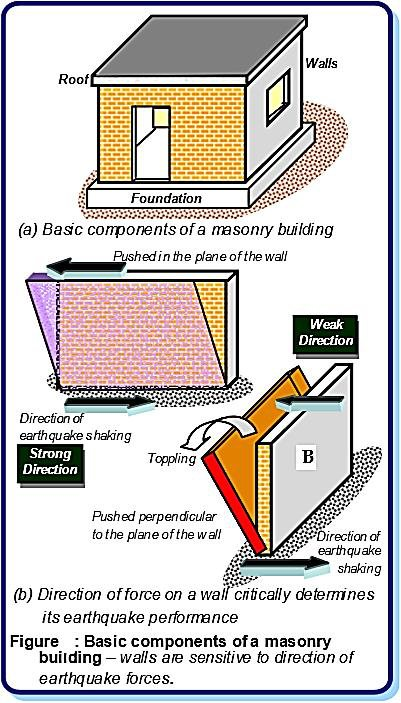
3.1.2 Shear walls and cross walls
• walls parallel to the direction of ground motion are called shear walls — they resist the force in-plane;
• walls orthogonal to it are called cross walls — they are loaded out-of-plane and also stiffen the shear walls at their ends.
- Shear walls are predominantly subjected to in-plane shear stresses and in-plane bending stresses. The in-plane bending stresses act normal to the bed joints.
- The in-plane shear stresses are responsible for the typical X-type cracking in shear walls; the in-plane bending stresses tend to cause separation of cross walls and shear walls at their junction.
- Although severe cracking may occur, a shear wall will not usually collapse outright unless a component of the ground motion acts normal to it — which, of course, it does a moment later.
- Stress concentration near openings in shear walls adds substantially to the vulnerability.
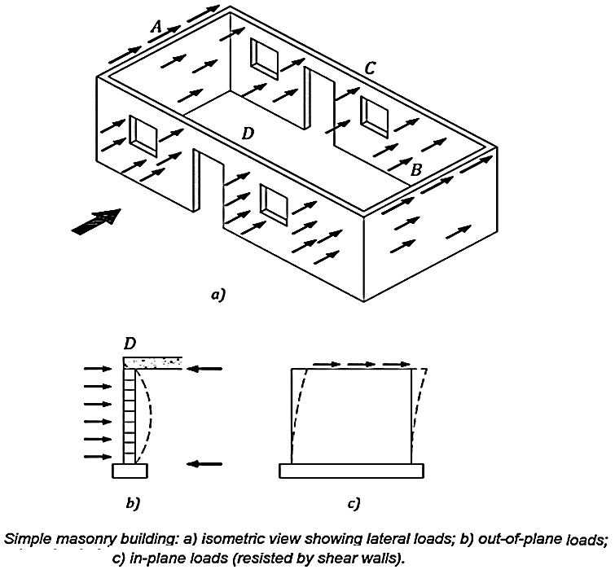
3.1.3 Concepts for earthquake resistant masonry
The basic principles of design and detailing in the codes are intentionally simple and easy to adopt. They focus on just two things:
2. Maintaining structural integrity
The primary requirement is therefore the prevention of catastrophic collapse of the building or its components — and to achieve it in a relatively simple and cost-effective manner.
The concept of “acceptable risk”
| Level of shaking | Performance objective |
|---|---|
| Minor earthquake | Resist without damage. |
| Moderate earthquake | Resist without significant structural damage, but some non-structural damage is accepted. |
| Major (severe) earthquake | Resist without major failure of the structural framework — to prevent loss of life and to allow safe escape for the occupants. |
Certain critical structures — hospitals, power generating units, communication centres — must be designed to remain operational during and after an earthquake.
Unreinforced masonry buildings are very common in rural and semi-urban Nepal, built from adobe, stone, burnt brick, concrete block and stabilised mud block, with mud, lime, cement or composite mortar. Normally they are designed — if at all — only for vertical loads, and because masonry has adequate compressive strength the structure behaves well as long as the loads remain vertical. It is the horizontal load that destroys it.
3.1.4 The three basic failure mechanisms of a masonry wall
Magenes and Calvi (1997) reduced the in-plane seismic behaviour of a masonry wall to three principal mechanisms. Every in-plane failure observed in the field is one of these, or a combination:
| Mechanism | What happens | Governed by |
|---|---|---|
| (a) Shear cracking | A diagonal crack forms across the panel, either stepping through the joints or running straight through the units. | Mortar/unit strength, level of vertical precompression, aspect ratio |
| (b) Sliding | The wall slides horizontally along a bed joint, usually near the base or at sill level. | Cohesion and friction of the bed joint, low precompression |
| (c) Rocking | The wall or pier lifts off at one edge and rotates about its compressed toe as a rigid block, eventually crushing the toe. | Slender (tall, narrow) piers with low vertical load |
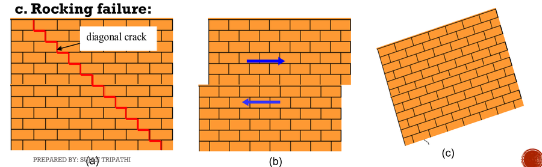
3.2 Historical Buildings with Seismic Resisting Features
Long before any code existed, builders in seismic regions arrived empirically at features that improve performance. Recognising them matters because (a) they explain why some historic buildings survived 1934 and 2015, and (b) they are the ancestors of the modern band-and-tie system.
| Traditional feature | What it does |
|---|---|
| Timber lacing / horizontal timber bands — dhajji-dewari and taq of Kashmir, timber bands in Newari and Bhutanese construction | Acts exactly as a modern lintel or roof band: ties the walls together, gives horizontal bending strength, and stops a crack from running through the full wall height. Timber's ductility absorbs energy. |
| Timber-braced infill frames (dhajji-dewari = “patchwork quilt wall”) | Small masonry panels confined by a timber frame — the historic ancestor of confined masonry. Damage is contained within each small panel. |
| Through stones / bond stones at regular spacing | Ties the two leaves of a thick stone wall together and prevents delamination — the single most effective measure for random rubble masonry. |
| Good corner interlocking and quoin stones | Prevents corner separation, the first damage to appear. |
| Symmetric, compact, rectangular plan; low height | Avoids torsion and limits the inertia force; most surviving temples and pati are low and squat. |
| Thick walls with a low height-to-thickness ratio; walls tapering with height | High out-of-plane stability and a lower centre of mass. |
| Small, few and centrally placed openings | Keeps the shear walls solid and the piers wide. |
| Light roofs on the upper storeys | Reduces the inertia force where it does the most damage. |
| Wide plinth / stepped foundation on firm ground | Reduces differential settlement and rocking. |
| Buttresses, pilasters and closely spaced cross walls | Reduce the effective length and slenderness of long walls (Chapter 2, §2.6.4). |
3.3 Lateral Force Resisting Systems
3.3.1 The load distribution system
A building is subjected to two families of load:
- Vertical loads — dead load of the materials of construction plus live load due to occupancy;
- Lateral loads — seismic forces and wind loads.
All walls in general can carry vertical load, but the ability of a wall to carry lateral load depends entirely on its disposition relative to the direction of that load. The chain is:
The strength and stiffness of the floors as horizontal girders is vital; roofs and floors of lightweight construction must therefore be used with care. A structure must have adequate stability in the direction of both principal axes — so-called “cross-wall” construction may have very little lateral resistance in the longitudinal direction. In multi-storey buildings a cellular or box-type layout is desirable for both stability and economy.
The size, shape and location of openings in the external walls has considerable influence on stability and on the magnitude of the stresses due to lateral load. If the openings in the longitudinal walls are placed so that portions of those walls act as flanges to the cross walls, the strength of the cross walls is considerably increased and the structure becomes much more stable — the flange-and-web action confirmed by shaking-table tests, in which walls A act as flanges to wall B acting as the web.
Ordinarily a load-bearing masonry structure is designed for permissible compressive and shear stresses (with no tension) as a vertical cantilever. No moment transfer is allowed for at the floor-to-wall connections, and the lateral forces are assumed to be resisted by diaphragm action of the floor/roof slabs, which, acting as horizontal beams, transmit the lateral force to the cross walls in proportion to their relative stiffness (moment of inertia).
3.3.2 Design loads and load combinations
| Item | Provision |
|---|---|
| Loads to be considered | Dead loads of walls, columns, floors and roofs; live loads of floors and roof; seismic forces; wind loads on walls and sloping roofs. Other loads such as vibration from railways or machinery are added by engineering judgement. |
| Dead loads | Calculated from unit weights taken in accordance with IS 875 (Part 1). |
| Design loads generally | In accordance with IS 875 (1987). |
| Seismic loads | Determined in accordance with IS 1893 (Part 1) — or NBC 105 in Nepal. |
| During construction | Suitable measures must ensure the partly-built masonry is not damaged by seismic/wind force, backfill behind walls or temporary construction loads. |
• DL + IL • DL + IL + (WL or EL) • DL + (WL or EL) • 0.9 DL + (WL or EL)
For wind and earthquake, the reversal of forces must be considered. The structure is designed for the critical stresses resulting from these combinations.
Equivalently — and this is the form usually used in the exam — keep the full permissible stress and apply a 25% reduced load:
• 0.75 [DL + IL + (WL or EL)] • 0.75 [DL + WL] • 0.75 [0.9 DL + EL]
3.3.3 Lateral load distribution — rigid and flexible diaphragms
Lateral loads from earthquake or wind are generally considered to act along the principal axes of the building. How they are shared out among the walls depends on the rigidity of the horizontal diaphragm and of the walls themselves.
| Basis | Rigid diaphragm | Flexible diaphragm |
|---|---|---|
| Definition | Does not undergo significant in-plane deformation relative to the supporting walls | Changes shape when subjected to lateral load |
| Typical construction | RC slab, in-situ concrete floor | Timber joists with plank flooring, CGI sheet roof, unbraced trusses, jack-arch floor |
| Distribution of storey shear | In proportion to the relative stiffness (rigidity) of the wall elements | In proportion to the tributary area associated with each wall, exactly as for vertical load |
| Torsion | Can transmit torsional moment; horizontal torsion arises from the eccentricity between the centre of mass and the centre of rigidity, and induces forces in walls both parallel and perpendicular to the load direction | Cannot transmit torsional forces |
| Support to out-of-plane walls | Provides a firm horizontal support at the top of the wall | Gives little or no support — the out-of-plane wall spans the full storey height unaided |
| Analysis | In-plane rigidities include both shearing and flexural deformation; rigidity of walls perpendicular to the load is usually disregarded, except for the stiffening (flange) effect where the connection is adequate | Simple tributary-area statics |
| Seismic performance | Much better — true box action | Poor — walls act individually and out-of-plane collapse dominates |
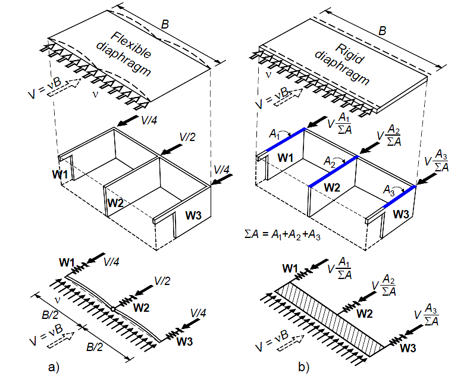
3.3.4 Elements of the lateral load resisting system
The elements that actually resist lateral load in a masonry building are:
- Shear walls — the primary in-plane resisting element
- Floor and roof diaphragms — collect and distribute the force
- Anchorage between slabs and walls, and anchorage of the roof to the walls
- Tie beams and tie columns (confined masonry)
- Plinth band, sill band, lintel band, roof band and gable band
- Vertical containment reinforcement at corners, junctions and opening jambs
- Toothed or stepped vertical joints at wall intersections
3.4 In-plane and Out-of-plane Behaviour of Walls 2079 Bhadra, Q2b
PAST EXAM QUESTIONS ON THIS TOPIC:
- Differentiate between in-plane and out-of-plane behaviour of masonry structures. Explain the different failure modes of masonry structures with a neat sketch. [8] (2079 Bhadra, Q2b)
| Basis | In-plane behaviour | Out-of-plane behaviour |
|---|---|---|
| Direction of load | Force acts parallel to the plane of the wall (along its length) | Force acts perpendicular to the plane of the wall |
| Name of the wall | Shear wall — the “strong direction” | Cross wall / transverse wall — the “weak direction” |
| Structural action | Deep cantilever / coupled piers — carries the storey shear by in-plane shear and in-plane bending | Vertical slab or plate spanning between floor and roof, and horizontally between cross walls |
| Governing stress | Diagonal tension, bed-joint shear, toe compression | Flexural tension normal to the bed joints — the weakest property of masonry |
| Stiffness & strength | High — a wall is one or two orders of magnitude stiffer in-plane | Very low |
| Governing parameters | Aspect ratio L/heff, level of vertical precompression, mortar and unit strength, size and position of openings | Height-to-thickness (h/t) ratio and the vertical stress on the wall; also the span between cross walls |
| Typical failure modes | Rocking, sliding, diagonal shear (bed-joint sliding or diagonal tension), toe crushing — the X crack | Simple overturning, composed overturning, vertical flexure, horizontal flexure — the wall falls outward |
| Consequence of failure | Severe cracking, loss of stiffness, but the wall usually stays standing | Collapse — the wall falls out, the floor/roof loses its support and pancakes. The dominant killer. |
| What controls it | Wall area (density of walls), pier proportions | Bands, cross walls, wall anchorage, diaphragm rigidity, wall slenderness |
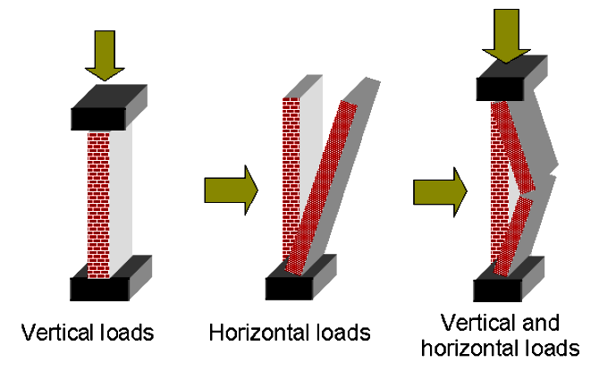
3.5 Box Integrity Action of Masonry Structures
3.5.1 Why it is needed — the four-wall argument
Consider the four-wall system of a single-storey masonry building, with walls A1, A2 (say the long walls) and B1, B2 (the short walls). For shaking in the direction shown:
- Inertia forces act in the strong direction of some walls and the weak direction of others.
- Walls shaken in their weak direction seek support from the other walls — B1 and B2 seek support from A1 and A2.
- More precisely, wall B1 pulls walls A1 and A2, while wall B2 pushes against them.
- At the next instant the shaking direction reverses, and a moment later it acts along the perpendicular horizontal axis — now A and B swap roles: B1 and B2 become the strong walls and A1 and A2 the weak ones.
- Thus walls transfer load to each other at their junctions, and through the lintel bands and the roof. Hence the masonry courses of the walls meeting at a corner must have good interlocking, and openings near wall corners are detrimental to good seismic performance.
3.5.2 Requirements for good box action
| Requirement | How it is achieved |
|---|---|
| Wall-to-wall connection | Toothed or stepped vertical joints at all corners and T-junctions (build corners first to 600 mm, or tooth in 450 mm lifts); vertical containment reinforcement at junctions. |
| Wall-to-roof / floor connection | Roof band at eave level and positive metal anchors so that the diaphragm can actually deliver force to the walls. A loosely connected roof is a threat to good seismic behaviour. |
| Wall-to-foundation connection | Plinth band, especially where the soil is soft or uneven. |
| A stiff diaphragm | RC slab, or a timber floor stiffened with diagonal bracing/plywood sheathing. |
| Horizontal bands at all levels | Plinth, sill, lintel, roof and gable bands — a lintel band alone ties the walls together and makes them behave as a single unit. |
| Walls not unduly slender | Limit h/t; provide cross walls or buttresses to reduce the span of long walls. Unduly slender walls are a threat to good seismic behaviour. |
| Simple, symmetric configuration | Compact rectangular plan, uniform mass and stiffness distribution. |
3.5.3 Configuration rules that support box action
- Break up complex plans. A building with horizontal projections in plan — shapes such as L, T, E and Y — should be separated into (almost) simple rectangular blocks, each of which has simple and good earthquake behaviour.
- Provide a seismic gap. Separated blocks oscillate independently and will hammer each other if they are too close; the codes give minimum seismic separations. Such separation may not be necessary if the horizontal projections are small — say up to about 15–20% of the length of the building in that direction.
- Watch the staircase. An integrally connected inclined staircase slab acts like a cross-brace between floors and transfers large horizontal forces at roof and lower levels — a classic area of damage. The remedy is to separate the staircase completely and build it on its own RC structure, with an adequate gap so the two do not pound.
- Keep the mass low and the plan compact. Large, tall, long and unsymmetrical buildings perform poorly.
3.6 Modes of Failure of Masonry Structures 2075 Chaitra2076 Chaitra2079 Bhadra2080 Bhadra
PAST EXAM QUESTIONS ON THIS TOPIC:
- Explain different modes of failure in brick masonry structures with sketches for both static and earthquake load. [10] (2075 Chaitra, Q2)
- Discuss in brief failure mechanism of masonry structures and remedial measures. [10] (2076 Chaitra, Q3a)
- Differentiate between in-plane and out-of-plane behaviour... Explain the different failure modes of masonry structures with a neat sketch. [8] (2079 Bhadra, Q2b)
- Describe failure mechanism of masonry building during earthquake and suggest its mitigation measures to make earthquake resistant with sketches. [12] (2080 Bhadra, Q1b)
3.6.1 The standard seven-fold classification
The failure pattern of masonry structures during an earthquake is classified as:
- Out-of-plane flexural and/or out-of-plane shear failure
- In-plane shear and/or in-plane flexural failure
- Separation of walls at junctions (corner separation)
- Failure of masonry piers between openings
- Local failures (parapets, gables, chimneys, cornices, projections)
- Buckling / delamination of walls and piers
- Separation of the roof from the walls
3.6.2 Failure under static (gravity) load 2075 Chaitra, Q2
The 2075 paper asked for failure modes under both static and earthquake load, so keep the two lists distinct. Under pure vertical (static) load a masonry wall or pier can fail by:
| Static failure mode | Description & cause |
|---|---|
| Compression failure by vertical splitting | The characteristic mode. The soft mortar bulges laterally, is restrained by the units, and puts the units into lateral tension, so vertical cracks split through the bricks (Chapter 2, Fig. 2.8). Occurs in short, stocky walls with low slenderness. |
| Local crushing / bearing failure | Under a concentrated load from a beam or lintel bearing, where the stress exceeds the local capacity. |
| Buckling (lateral instability) | In slender walls and piers — high slenderness ratio; failure occurs at a stress far below the crushing strength (Chapter 2, Fig. 2.16). |
| Flexural tension cracking due to eccentric load | When the resultant falls outside the middle third (e > t/6), tension develops on one face and a horizontal crack opens along a bed joint. |
| Cracking due to differential settlement | Diagonal tension cracks running towards the settling support — doming (heaving of expansive soil at the centre) gives cracks sloping one way and dishing (shrinkage at the centre) the other. |
| Shrinkage / thermal / moisture movement cracks | Vertical cracks in long unjointed walls; horizontal cracks under a concrete slab that shrinks. |
| Sliding at a damp-proof course | Where the DPC breaks the bond and lateral thrust exists. |
| Arch thrust / spreading | Horizontal thrust from an arch, vault or sloping roof pushes the supporting wall outward. |
3.6.3 In-plane failure modes under earthquake load
Four modes, distinguished by the aspect ratio of the pier, the vertical precompression and the relative strength of unit and mortar:
| Mode | Mechanism | When it occurs | Crack appearance |
|---|---|---|---|
| 1. Rocking (flexural) | A horizontal flexural crack opens at the heel of the pier; the pier then rotates as a rigid block about its compressed toe. | Slender piers (tall relative to their length) with low vertical load. | Horizontal cracks at top and bottom of the pier; crushing at the toes. Relatively ductile and not immediately dangerous. |
| 2. Sliding (bed-joint shear) | The wall slides horizontally along a bed joint when the shear exceeds the cohesion plus friction. | Low vertical load and weak mortar; commonly at the base, at sill level or at a DPC. | A single horizontal crack with visible offset. Often stair-stepped where head joints open and close to allow movement on the bed joints. |
| 3. Diagonal shear — bed-joint sliding (stepped crack) | The diagonal crack follows the mortar joints, stepping from bed joint to head joint. | Weak mortar, strong units — the joint is the weak link. The usual case in Nepali brick-in-mud and stone-in-mud masonry. | A stair-stepped diagonal crack through the joints, with the bricks intact. |
| 4. Diagonal tension (X cracking) and toe crushing | Principal tensile stress exceeds the tensile strength of the masonry as a whole and the crack runs straight through the units. Under reversed cycles two crossing cracks form. | Strong mortar, weak units and high compressive stress; squat piers. | The classic straight “X” crack cutting through the bricks, followed by spalling and crushing of the toes. |
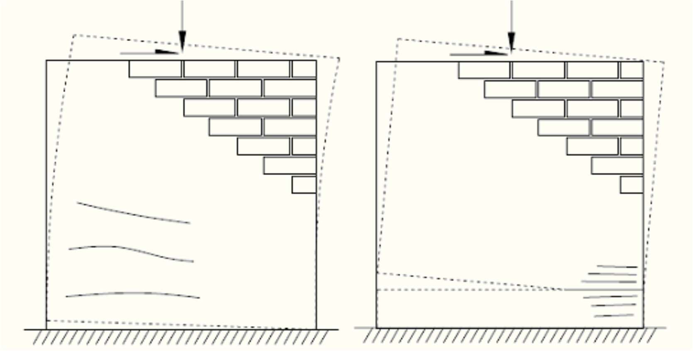
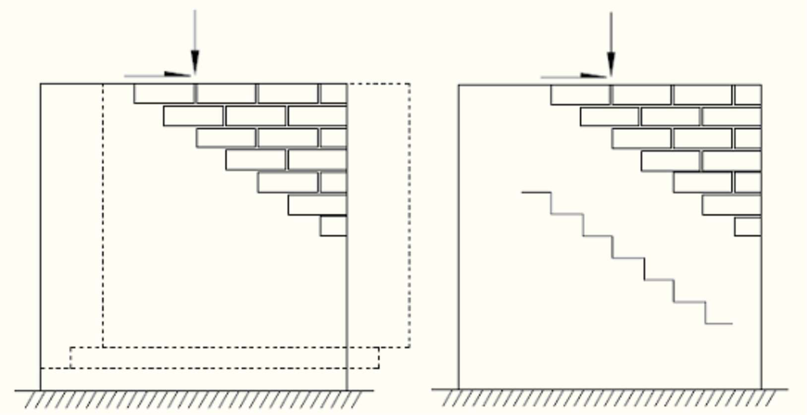
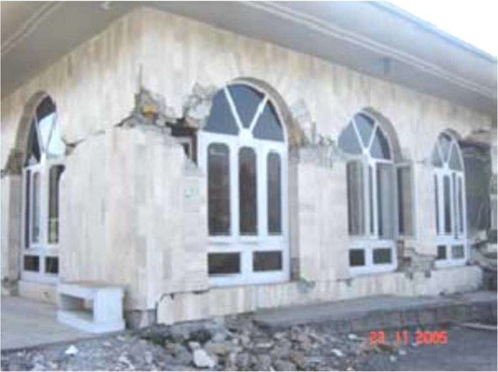
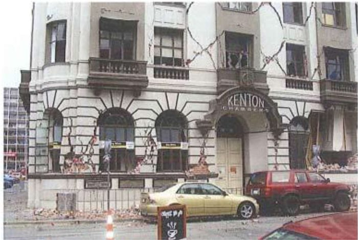
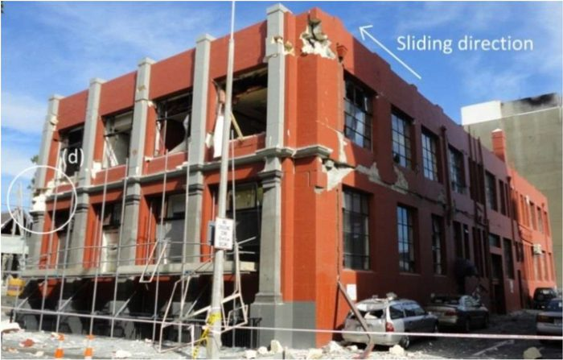
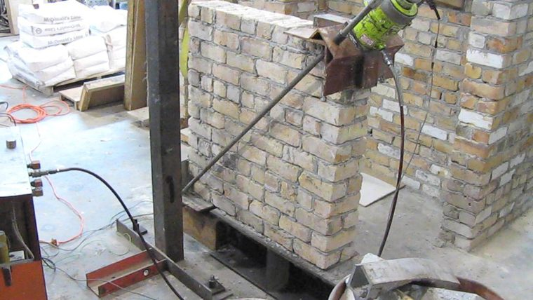
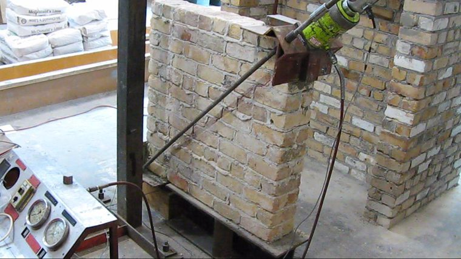
Progressive damage sequence of a squat pier (laboratory observation)
For a relatively short wall with L/heff of about 1.7, in which bed-joint sliding and toe-crushing capacities are similar, the moderately ductile sequence is:
- Flexural cracking at the heel of the wall.
- Diagonally oriented cracks at the toe, typically with spalling and crushing of the units.
- Sliding along a horizontal bed joint near the base, sometimes with stair-stepped bed-joint sliding higher up.
- With repeated cycles the diagonal cracks grow, and finally crushing of the toes or excessive sliding causes failure.
For stockier walls with L/heff > 1.25 the sequence is: flexural cracking at the base that does not propagate all the way across (giving a series of horizontal cracks above the heel) → sliding on bed joints in the central portion of the pier → diagonal cracks at the toe → large cracks at the upper corners.
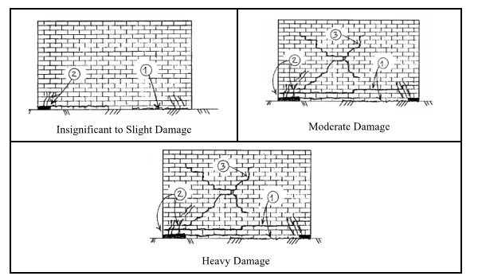
3.6.4 Out-of-plane failure modes (collapse mechanisms)
Out-of-plane failure occurs because of the lack of adequate wall ties, bands or cross walls. One common form is a rigid-body rocking motion occurring at three locations — at the top of the wall, at the bottom, and at mid-height. The important variables are the vertical stress on the wall and its height-to-thickness ratio; therefore walls at the top of buildings and slender walls are the most likely to suffer damage. In long walls without cross walls the failure mode is out-of-plane bending in the horizontal direction.
| Mechanism | Description | Cause |
|---|---|---|
| Simple overturning | The whole facade wall rotates outwards about its base as a single rigid block and falls away from the building. | No connection at all between the facade and the transverse walls or the floor; the most common and most lethal mechanism. |
| Composed (compound) overturning | The facade overturns dragging with it a wedge-shaped portion of the adjoining transverse walls. | Good interlocking at the corners but no floor/roof tie — the corner holds so the failure surface cuts diagonally into the return walls. |
| Vertical flexure (vertical bending) | The wall is restrained at floor and roof level but bulges and hinges at mid-height, breaking into an upper and a lower part. | Wall restrained top and bottom but too slender (high h/t); typical of upper storeys. |
| Horizontal flexure (horizontal bending / arching) | The wall spans horizontally between cross walls or buttresses and fails with a vertical crack at mid-span and cracks at the supports. | Long wall well tied at its ends but unsupported at the top — flexible diaphragm. |
| Gable-end failure | The triangular gable, which has little vertical load and no restraint at the top, topples and pulls the top of the end wall down with it. | Missing gable band; missing attachment to the attic or ceiling. |
| Parapet / chimney failure | A vertical cantilever with almost no precompression — falls into the street. | Limiting SR for a free-standing wall is only 10. |
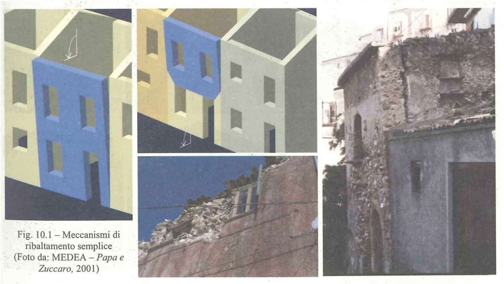
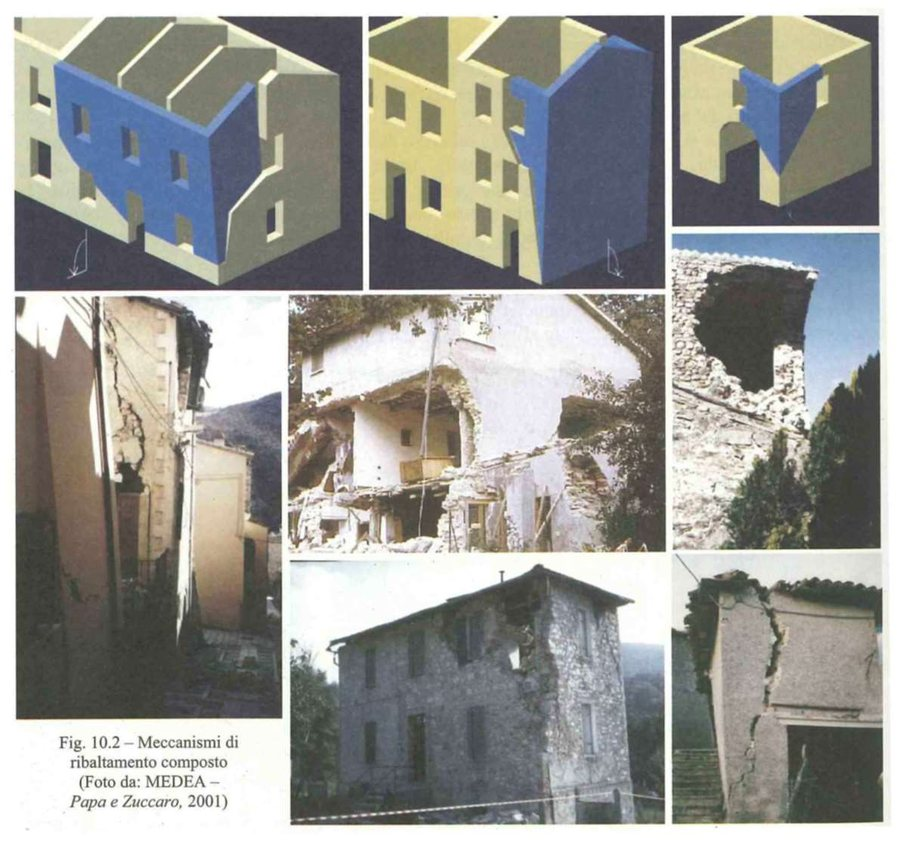
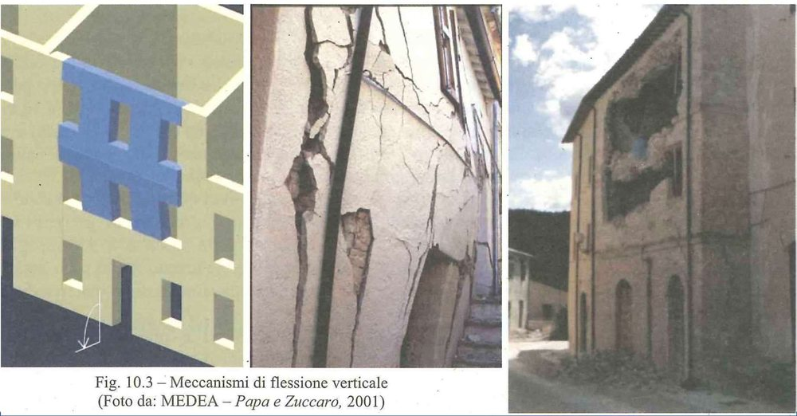
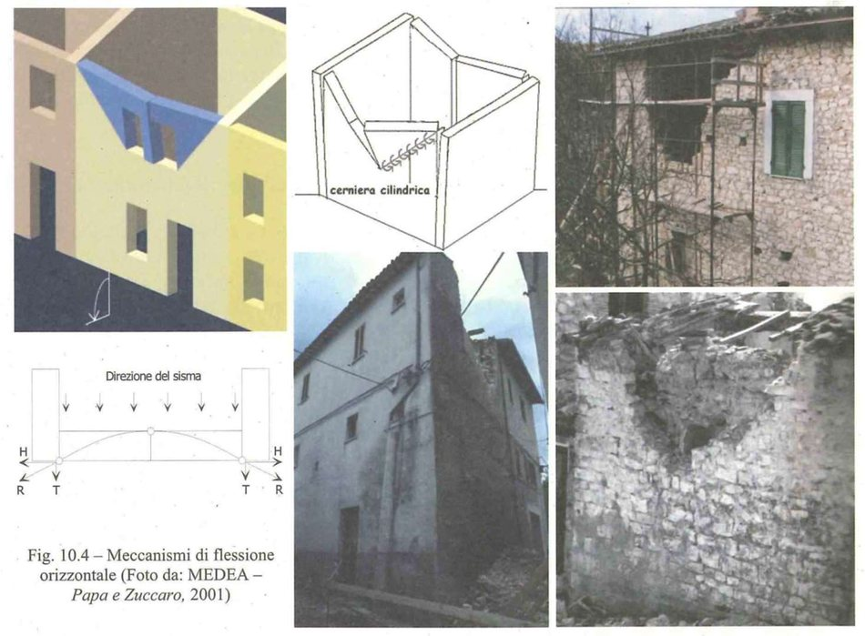
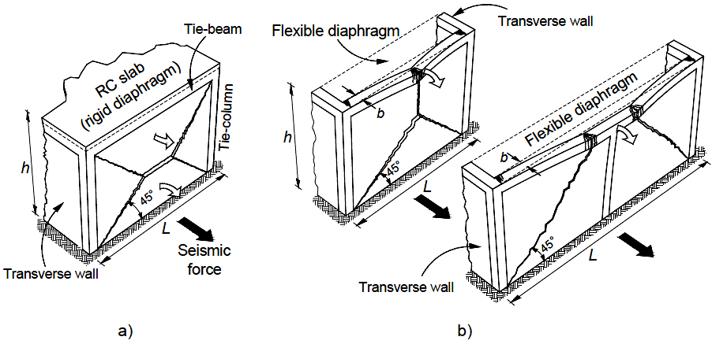
3.7 Typical Damages to Masonry Buildings in Earthquakes 2078 Bhadra2080 Bhadra2081 Bhadra
PAST EXAM QUESTIONS ON THIS TOPIC:
- Discuss the failure mechanisms of the stone masonry buildings with mud mortar during the 2080 Jajarkot earthquake. [8] (2081 Bhadra, Q2a)
- Describe failure mechanism of masonry building during earthquake and suggest its mitigation measures to make earthquake resistant with sketches. [12] (2080 Bhadra, Q1b)
- Describe in brief with sketch major failure mechanism of masonry building during Gorkha earthquake. [6] (2078 Bhadra, Q1b)
3.7.1 Corner separation
- Separation of orthogonal walls due to combined in-plane and out-of-plane stresses at the corners is one of the most common damage patterns in masonry buildings — damage typically starts at the corners.
- Separation on both sides of a wall leaves it unsupported at its two ends and produces an unstable condition leading to out-of-plane failure.
- The cause is the lack of lateral support at the two ends of the wall during out-of-plane loading, i.e. loss of box action.
- If all the corners separate, the lateral load carrying system of the whole building is significantly reduced.
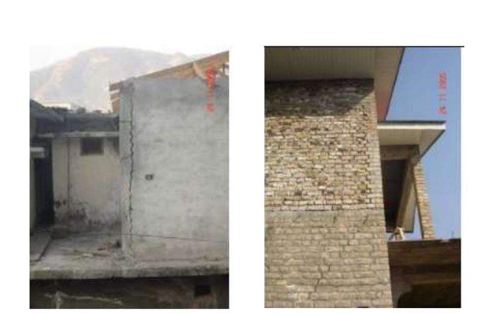
3.7.2 Out-of-plane failure and gable collapse
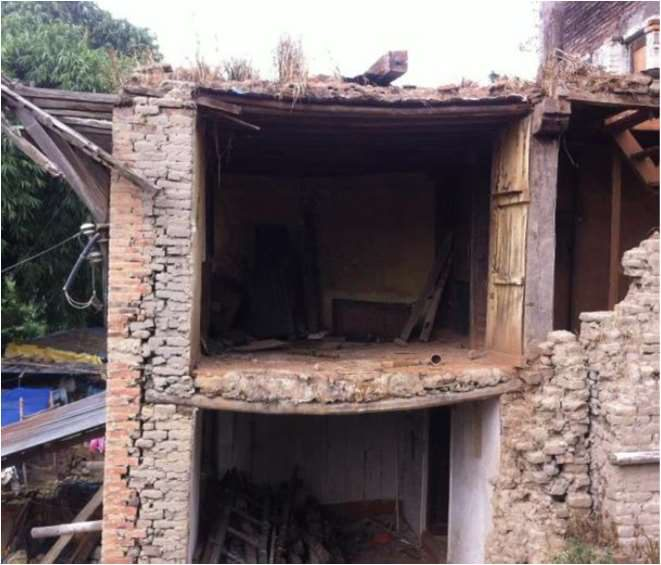
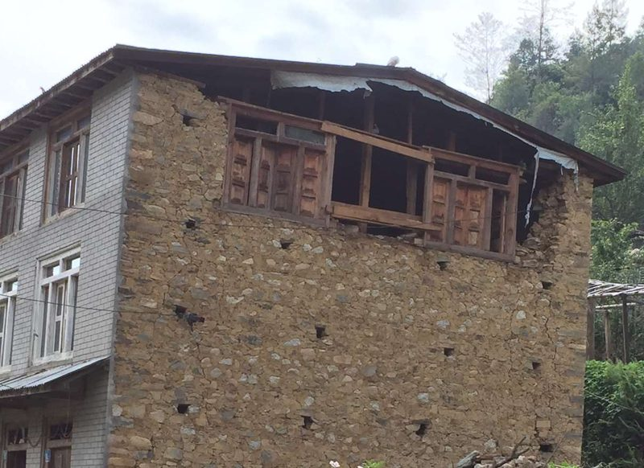
3.7.3 Delamination of multi-leaf walls
Delamination — separation of the two (or three) wythes of a masonry wall through its thickness — is another major damage type. The outer leaf buckles and peels away, leaving the wall with a fraction of its original thickness and no capacity. It is the characteristic failure of random rubble stone walls with a weak inner core and no through-stones, and was the dominant mechanism in the 2080 Jajarkot earthquake.
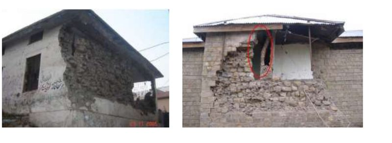
3.7.4 Roof failure and other damage
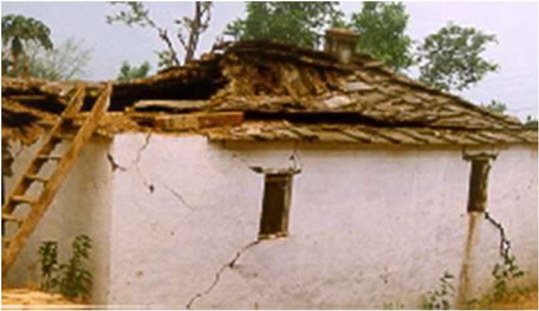
3.7.5 Damage grade classification (EMS)
Post-earthquake assessment uses the five damage grades of the European Macroseismic Scale. The basic steps of a detailed evaluation are: survey the building from outside → identify the cracks → examine the site for geotechnical hazard → inspect from inside → inspect at critical locations → interpret.
| Grade | Extent of damage | Suggested post-earthquake action |
|---|---|---|
| G1 Negligible to slight (no structural, slight non-structural) | Thin cracks in plaster; falling of plaster bits in limited parts; in rare cases fall of loose stone from the upper part of the building. | Building need not be vacated; architectural repairs needed; seismic strengthening advised. |
| G2 Moderate (slight structural, moderate non-structural) | Thin cracks in many walls; falling of plaster in large areas; damage to non-structural parts such as chimneys and projecting cornices. Load carrying capacity not reduced. | Architectural repairs needed; seismic strengthening advised. |
| G3 Substantial to heavy (moderate structural, heavy non-structural) | Large and extensive cracks in most walls; roof tiles detach; tilting or falling of chimneys; failure of individual non-structural elements such as partition or gable walls. Load carrying capacity partially reduced. | Cracks in walls need grouting; architectural repairs required; seismic strengthening advised. |
| G4 Very heavy (heavy structural, very heavy non-structural) | Gaps occur in walls; parts of walls collapse; partial structural failure of floors and roof; the building takes a permanent tilt. | Vacate the building; demolish and reconstruct, or carry out extensive restoration. |
| G5 Destruction (very heavy structural damage) | Total or near-total collapse. | Vacate and demolish. |
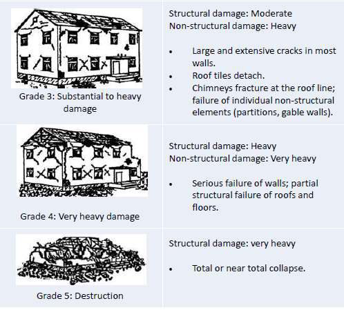
3.7.6 Mitigation and Remedial Measures 2076 Chaitra, Q3a2080 Bhadra, Q1b
Two papers asked for the mitigation measures explicitly. Present them keyed to the failure they prevent — that structure alone earns marks:
| Failure it prevents | Measure |
|---|---|
| Corner separation | Toothed / stepped joints at corners and T-junctions (corners built first to 600 mm, or toothing in 450 mm lifts); vertical containment reinforcement at all corners and junctions, anchored into the bands. |
| Out-of-plane collapse | Horizontal bands at plinth, sill, lintel, roof and gable level; cross walls or buttresses to reduce the wall span; limit the height-to-thickness ratio; anchor the wall to the diaphragm. |
| Roof / floor separation | Positive metal anchors tying the roof and floor to the walls; a roof band at eave level. |
| Loss of box action | Provide a rigid diaphragm (RC slab), or brace a timber floor with diagonals or plywood sheathing. |
| Delamination of stone walls | Through-stones (bond stones) at regular spacing in both directions; or a substitute such as an S-shaped tie, a wooden dowel or a concrete bond block. |
| Diagonal shear cracking of piers | Use good-quality mortar (never mud) matched to the unit; keep piers wide; limit and align the openings; provide bands above and below the openings. |
| Failure of piers between openings | Openings small, few, centrally placed and vertically aligned, kept at least 600 mm (or half the wall height) from the corner; total opening length limited to about 50% of the wall length; provide vertical bars at the jambs. |
| Torsion | Symmetric plan and uniform distribution of walls; separate irregular plans into simple rectangular blocks with a seismic gap. |
| Pounding | Adequate seismic separation gap between adjacent blocks and buildings; separate the staircase tower. |
| Excessive inertia force | Use a light roof; limit the number of storeys (NBC 202 limits load-bearing masonry to about 3 storeys); reduce the mass of the upper floors. |
| Local / non-structural failure | Avoid or reinforce parapets, gables, chimneys and heavy projections; provide a gable band or replace the gable with a light truss. |
| Poor materials / workmanship | Quality control — sound units, correct mortar grade, full and even joints, soaked bricks, proper curing, limited daily lift height, and supervision. The strength of a brittle material is a minimum assured value. |
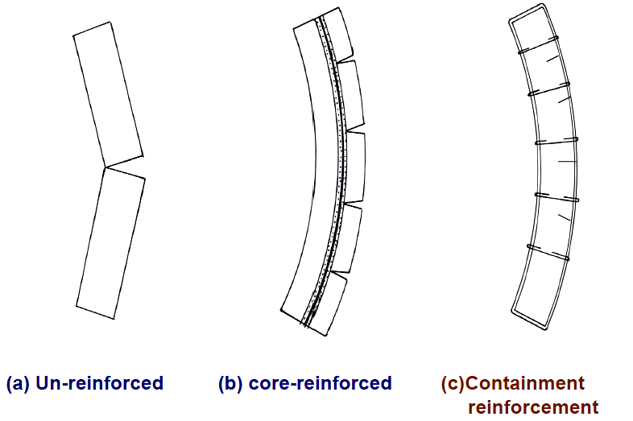
3.8 Seismic Performance due to Various Factors
The syllabus lists nine factors explicitly. Each is a potential 2–4 mark sub-question.
(a) Geometrical and mass irregularities
- Plan irregularity — L, T, E, Y and U shapes have re-entrant corners where stress concentrates and where the two wings vibrate out of phase. Remedy: separate into simple rectangular blocks with a seismic gap, or tie the corner strongly. Projections up to ~15–20% of the plan dimension are tolerable.
- Vertical irregularity — setbacks, a storey much taller than the others, or walls discontinued at a lower level (vertical discontinuity in the load path). Every vertical lateral-load-resisting element must be continuous from the roof to the foundation.
- Mass irregularity — there should be no change in effective mass of more than about 80% from one storey to the next. A heavy water tank, a mud overlay on the roof, or a heavily loaded storage floor raise the inertia force locally.
- Soft / weak storey — the stiffness of any storey should not be less than 60% of that of the adjacent storey nor less than 70% of the average of the three storeys above; the strength should not be less than 70% of that of the adjacent storey. The open ground storey for shops is the classic offender.
- Slenderness of the building as a whole — tall, long and unsymmetric buildings perform poorly.
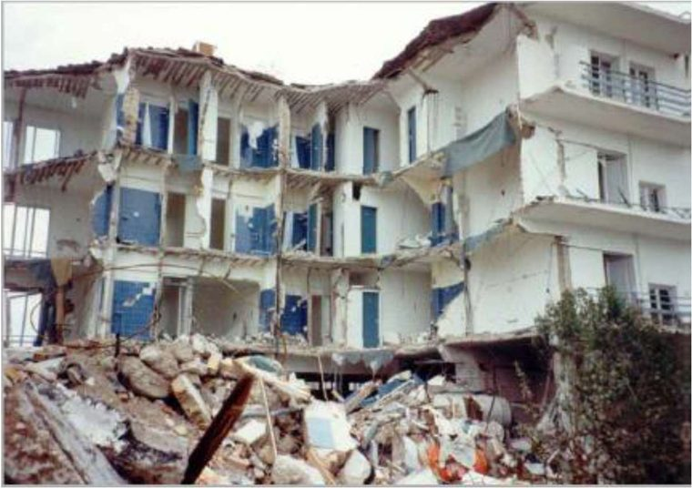
(b) Opening size and location
- Openings are a functional necessity, but their size and location decide the performance of the building.
- Openings too close to wall corners hamper the flow of forces from one wall to another — precisely where the pull/push transfer of §3.5.1 must happen.
- Large openings weaken the wall in carrying inertia force in its own plane: the wall becomes a row of narrow piers coupled by spandrels, and the piers fail in shear.
- Rule: keep all openings as small as possible and as far from the corners as possible; align them vertically from storey to storey; provide lintel and sill bands and vertical bars at the jambs.
- Codal guidance: distance from the inside corner ≥ 600 mm (or one-quarter of the storey height); total length of openings not more than about 50% of the wall length for a single-storey building; pier width between openings ≥ 600 mm.
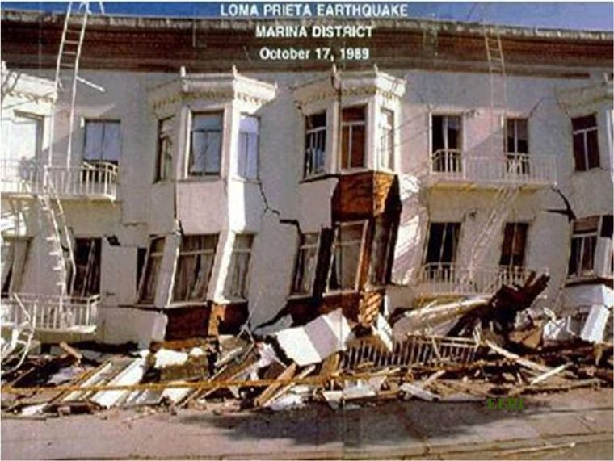
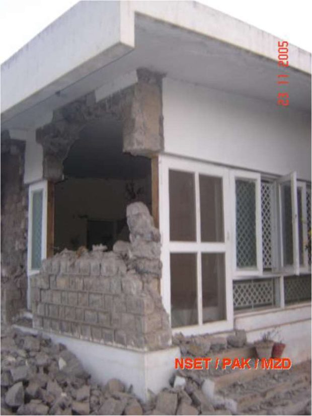
(c) Eccentrically acting gravity load
- A slab or beam bearing on only part of the wall thickness, a wall offset from the storey below, or a cantilevered balcony all put the vertical load off the centroidal axis.
- The resulting moment reduces the permissible stress through ks (Chapter 2, §2.6.6) and, when e > t/6, causes flexural tension and horizontal cracking on one face.
- Under earthquake this pre-existing eccentricity adds to the seismic bending, so the wall cracks and loses its precompression much earlier.
(d) Eccentrically acting lateral force — torsion
- Torsion arises from the eccentricity between the centre of mass (CM) and the centre of rigidity (CR) in plan. The building not only translates but also twists, and the walls farthest from the CR receive a large additional shear.
- Codal limits: the distance between the storey centre of mass and the storey centre of stiffness should be less than 30% of the building dimension at right angles to the direction of the force; a minimum (accidental) eccentricity of at least 5% of that dimension must always be assumed.
- Cause: unsymmetrical wall layout — e.g. a building with the ground floor open on one side, or a heavy stair/lift core placed at one end.
- Only a rigid diaphragm can transmit torsion; with a flexible diaphragm the torsional distribution simply does not develop, but the walls are then unsupported out-of-plane instead.
- The calculation of direct and torsional shear in shear walls is the subject of Chapter 4.
(e) Rigid and flexible floor diaphragm
See §3.3.3 and Fig. 3.4. In summary:
| Aspect | Rigid | Flexible |
|---|---|---|
| Shear distribution | By relative stiffness | By tributary area |
| Torsion | Transmitted | Not transmitted |
| Support to out-of-plane walls | Effective | Poor — wall spans full height unaided |
| Overall | Enables genuine box action | Walls behave individually → out-of-plane collapse |
(f) Slender walls
- A high height-to-thickness ratio is the single most important variable in out-of-plane vulnerability; walls at the top of a building (low precompression) and slender walls are the most likely to be damaged.
- Slender walls also buckle under vertical load, which is why IS 1905 imposes limiting slenderness ratios (27 / 20 / 13 / 30 / 10 — Chapter 2, §2.6.5).
- In long walls without cross walls the failure mode becomes horizontal out-of-plane bending; the remedy is cross walls, buttresses or pilasters at regular spacing.
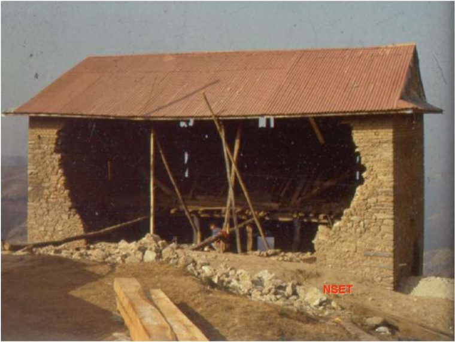
(g) Horizontal and vertical bands
- Horizontal bands (plinth, sill, lintel, roof, gable) give the walls horizontal bending strength against out-of-plane inertia, tie orthogonal walls together, stop cracks propagating over the full height, and turn the building into a box. The lintel band is the most important and must be provided in all storeys and all walls.
- Vertical bars (containment reinforcement) at corners, wall junctions and opening jambs resist the tension caused by overturning and rocking, and distribute the damage into many fine cracks instead of one collapse hinge (Fig. 3.18).
- Together they convert unreinforced masonry into something approaching confined masonry — the single most cost-effective seismic improvement available.
(h) Material properties
- Mortar: mud mortar has almost no bond or tensile strength and loses what it has when wet — the primary reason stone-in-mud houses collapse. Cement or cement–lime mortar of the correct grade transforms the behaviour.
- Units: rounded river boulders and irregular rubble give poor bond and thick joints; regular dressed stone or good burnt brick gives far better performance.
- Relative strength of unit and mortar decides whether the crack steps through the joints or runs through the units (§3.6.3).
- Wall density (total shear wall area per floor area) largely determines whether a building survives at all.
- Ductility: masonry is brittle; reinforcement, bands and confinement are the only way to introduce any.
(i) Construction quality
- The strength of brittle materials such as masonry and concrete is a minimum assured value and is highly sensitive to the quality of construction material, the workmanship, the supervision and the construction methods.
- Common defects: unfilled head (vertical) joints; uneven and excessively thick bed joints; no soaking of bricks; no curing; poor corner interlocking; building too fast so green mortar is overloaded; bands not continuous or not properly lapped; through-stones omitted.
- A perfectly designed building constructed badly will still collapse — which is why the codes prescribe detailing rules that a mason can follow without calculation.
(j) Pounding between adjacent buildings
Adjacent buildings of different height, mass or period vibrate out of phase and hammer each other. The damage is concentrated at floor level of the shorter building, where its slab strikes the taller building's column or wall mid-height. The remedy is an adequate seismic separation gap.
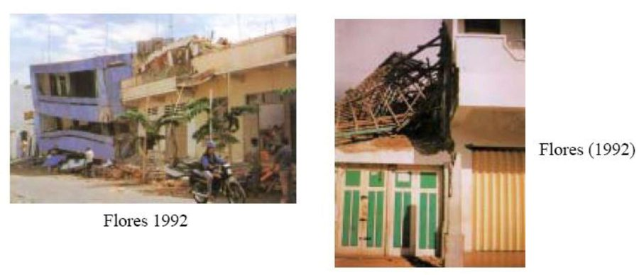
3.9 Seismic Performance of Masonry Buildings during Past Earthquakes 2078 Bhadra2081 Bhadra
3.9.1 2015 Gorkha earthquake (Mw 7.8) 2078 Bhadra, Q1b
The major failure mechanisms observed in masonry buildings during the Gorkha earthquake were:
- Out-of-plane collapse of walls — by far the dominant mechanism, caused by unanchored flexible timber floors and roofs, the absence of bands and slender walls in the upper storeys.
- Corner separation and vertical cracking at wall junctions, from poor interlocking of the courses at the corners.
- Delamination and collapse of multi-wythe walls — both burnt-brick-in-cement and un-coursed random rubble walls with corrugated galvanised iron roofs, because of the missing through-stones.
- In-plane diagonal (X) shear cracking of piers between openings, and vertical cracking at the corners of openings.
- Failure of gable walls, which pulled down the top of the end walls and the roof.
- Separation of the roof from the walls, followed by collapse of heavy tiled roofs on the occupants.
- Failure of the soft/open ground storey in shop-front buildings and of the short columns created by mezzanines.
- Total collapse of unreinforced stone-in-mud houses in the rural districts around the epicentre, while buildings with even a single RC lintel band frequently survived with repairable damage — the clearest field evidence available for the value of banding.
- Widespread failure of temples, monuments and monasteries, several of which had already been weakened by earlier earthquakes, plus lifeline failures such as the collapse of a penstock in Sindhupalchowk.
3.9.2 2080 BS (2023) Jajarkot earthquake (M 6.4) 2081 Bhadra, Q2a
Although only a moderate M 6.4 event, it destroyed a very large number of houses because the building stock in Jajarkot and Rukum West is almost entirely random rubble stone masonry in mud mortar. The failure mechanisms specific to that construction are:
| Mechanism | Why it happened in stone-in-mud construction |
|---|---|
| Delamination of the wall through its thickness | Thick two- or three-leaf walls with a loose rubble core and no through-stones; the leaves have no connection, so the outer leaf peels off and the wall loses most of its section. |
| Out-of-plane overturning of walls | Flexible timber/slate roofs simply resting on the walls, no anchorage, no bands, and heavy walls with a high h/t ratio. |
| Corner separation and disintegration at junctions | Rounded and irregular stones give no interlocking at corners; mud mortar has essentially zero tensile and bond strength, so the corner simply comes apart. |
| Bulging and buckling of the wall | Random rubble with thick mud joints and no bond; the wall behaves as loose stacked stone once shaking begins. |
| Diagonal / stepped shear cracking of piers | Weak mortar means the crack steps around the stones through the joints (§3.6.3, mode 3). |
| Collapse of the heavy mud-and-slate roof | Very large mass high up, unanchored, so a large inertia force is applied to walls that cannot resist it; the roof then falls in. |
| Gable and parapet collapse | No gable band, no vertical load to stabilise them. |
| Loss of strength of the mud mortar | Rain before and after the event further weakened an already negligible bond. |
| Total (pancake) collapse | Once the walls disintegrated, the floors and roof lost all support — giving a very high fatality rate for a moderate earthquake. |
3.9.3 Other reference earthquakes
| Event | Lesson for masonry |
|---|---|
| 1934 Nepal–Bihar, M 8.4 | 80,893 buildings destroyed and 126,355 damaged in the Valley; showed the vulnerability of tall, slender, unbanded brick towers (Dharahara) and of three-leaf walls. |
| 1988 Udayapur, M 6.6 | Extensive damage to brick-in-mud buildings in eastern Nepal and Bhaktapur, at a magnitude usually considered moderate. |
| 2001 Bhuj (Gujarat), Mw 7.7 | Collapse of stone and brick buildings in Bachau and Kutch; also demonstrated the value of RC lintel bands — a two-storey slate-and-block house with bands in both storeys survived undamaged next to collapsed neighbours. |
| 2005 Kashmir, Mw 7.6 | Massive delamination of rubble stone masonry; renewed international interest in traditional timber-laced dhajji-dewari, which performed markedly better. |
| 1985 Mexico City, M 8.1 | Resonance of mid-rise buildings with the soft lake-bed deposits — site effects can matter more than distance. |
| 1989 Loma Prieta, USA | Failure of unreinforced masonry buildings with large shopfront openings in the Marina District. |
- Two lines on why masonry is vulnerable: brittle, heavy, weak in tension, and the walls carry everything.
- Classification — the seven-fold list of §3.6.1. (2 marks)
- In-plane modes with sketches — rocking, sliding, bed-joint stepped crack, diagonal tension X crack + toe crushing. Add the strong-mortar / weak-mortar diagnostic. (3 marks)
- Out-of-plane modes with sketches — simple overturning, composed overturning, vertical flexure, horizontal flexure. State that h/t and precompression govern. (3 marks)
- Other damage — corner separation, delamination, gable and roof failure, pounding. (1 mark)
- Mitigation table — the §3.7.6 list, each measure tied to the failure it prevents. (3 marks)
Quick Revision — Points to Memorise
- Weak direction = perpendicular to the wall plane; strong direction = along the wall length. Horizontal shaking is the most damaging.
- Shear wall = parallel to shaking (in-plane); cross wall = orthogonal (out-of-plane).
- Magenes & Calvi's three mechanisms: shear cracking, sliding, rocking.
- Four in-plane modes: rocking, sliding, bed-joint (stepped) diagonal shear, diagonal tension (X) + toe crushing.
- Four out-of-plane mechanisms: simple overturning, composed overturning, vertical flexure, horizontal flexure. Governed by h/t ratio and vertical stress.
- Stepped crack → weak mortar. Straight X crack through bricks → strong mortar + high compression.
- Seven-fold damage classification (§3.6.1) — learn it as a list.
- Rigid diaphragm → distribute by stiffness, transmits torsion. Flexible diaphragm → distribute by tributary area, no torsion.
- Load combinations: DL+IL; DL+IL+(WL or EL); DL+(WL or EL); 0.9DL+(WL or EL). Permissible stress +1/3, or equivalently load ×0.75.
- Torsion limits: CM–CR eccentricity < 30% of the plan dimension; minimum accidental eccentricity 5%.
- Soft storey: stiffness ≥ 60% of the adjacent storey and ≥ 70% of the average of the three above. Weak storey: strength ≥ 70% of the adjacent storey. Mass irregularity: change ≤ 80%.
- Openings: small, few, central, vertically aligned, ≥ 600 mm from the corner, total ≤ ~50% of the wall length.
- Plan projections up to ~15–20% of the length need no seismic joint; beyond that, separate the blocks.
- EMS damage grades G1–G5: G1/G2 repair, G3 grout + repair, G4/G5 vacate.
- Jajarkot 2080 keyword: random rubble stone in mud mortar, no through-stones → delamination + out-of-plane collapse.
Chapter Summary
Masonry buildings are brittle and heavy, so ground shaking generates large inertia forces at the roof and floor levels that must travel through the walls to the foundation. A wall is strong when pushed along its length (in-plane, as a shear wall) and very weak when pushed perpendicular to its plane (out-of-plane, as a cross wall); because the shaking reverses and acts along both horizontal axes, every wall plays both roles, and it is the out-of-plane role that governs survival. Lateral load is collected by the floor and roof acting as horizontal diaphragms and delivered to the shear walls, which behave as vertical cantilevers designed for compression and shear with no tension. A rigid diaphragm distributes the storey shear in proportion to wall stiffness and can transmit torsion; a flexible diaphragm distributes by tributary area, cannot transmit torsion, and leaves the out-of-plane walls unsupported.
Survival depends on box action — the roof, walls and foundation acting as one closed box, achieved by corner interlocking, horizontal bands at plinth, sill, lintel, roof and gable level, vertical containment reinforcement, positive wall-to-roof anchorage and a stiff diaphragm. In-plane failure occurs by rocking, sliding, bed-joint (stepped) diagonal cracking or diagonal tension with toe crushing, the choice depending on the pier aspect ratio, the vertical precompression and whether the mortar is weaker or stronger than the units. Out-of-plane failure occurs by simple overturning, composed overturning, vertical flexure or horizontal flexure, governed by the height-to-thickness ratio and the vertical stress. Other characteristic damage includes corner separation, delamination of multi-leaf walls, failure of piers between openings, gable and parapet collapse, roof separation and pounding, all classified after the event on the five-grade EMS scale.
Performance is degraded by plan, vertical and mass irregularity, by large openings and openings near corners, by eccentric gravity load, by torsional eccentricity between the centre of mass and the centre of rigidity, by flexible diaphragms, by slender walls, by the absence of bands, by poor materials — above all mud mortar — and by poor workmanship. Field evidence from 1934, 1988, 2015 Gorkha and 2080 Jajarkot confirms all of it: unreinforced stone-in-mud houses delaminate and overturn, while otherwise identical buildings with simple RC bands and through-stones survive with repairable damage.
All Past Exam Questions from this Chapter
CHAPTER 3 — COMPLETE LIST (CE 72502 / ENCE 367)
- Discuss the failure mechanisms of the stone masonry buildings with mud mortar during the 2080 Jajarkot Earthquake. [8] (2081 Bhadra, Q2a) → §3.9.2
- Explain the strengthening procedure for the damaged masonry buildings. [8] (2081 Bhadra, Q2b) → §3.7.6 and Chapter 6
- Describe failure mechanism of masonry building during earthquake and suggest its mitigation measures to make earthquake resistant with sketches. [12] (2080 Bhadra, Q1b) → §3.6, §3.7.6
- Differentiate between in-plane and out-of-plane behaviour of masonry structures. Explain the different failure modes of masonry structures with a neat sketch. [8] (2079 Bhadra, Q2b) → §3.4, §3.6
- Describe in brief with sketch major failure mechanism of masonry building during Gorkha earthquake. [6] (2078 Bhadra, Q1b) → §3.9.1
- Discuss in brief failure mechanism of masonry structures and remedial measures. [10] (2076 Chaitra, Q3a) → §3.6, §3.7.6
- Explain different modes of failure in brick masonry structures with sketches for both static and earthquake load. [10] (2075 Chaitra, Q2) → §3.6.2 (static), §3.6.3–3.6.4 (seismic)
Note that 2081 Bhadra Q2b (“strengthening procedure for damaged masonry buildings”) sits on the boundary between this chapter and Chapter 6. Answer it with the mitigation table of §3.7.6 plus the repair/retrofit techniques of Chapter 6 — grouting and stitching of cracks, splint-and-bandage, wire-mesh jacketing, through-stones, addition of bands and vertical bars, and reduction of openings.